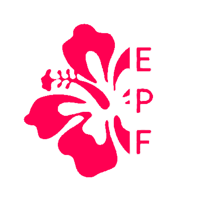

GUIDE // 03
EPF Poster & Propaganda Guide
A practical guide for making posters, graphic pieces, and social visuals that feel sharp, direct, and unmistakably EPF.
Make the message legible in one second. If someone has to work for it, it is not ready.
1 / 6
Brainstorm ideas quickly without overthinking.
Start by identifying your core message and the audience you want to reach.
- All you need is a clear claim: a slogan, a contrast, or a call to action.
- Lead with one bold headline.
- Use empty space like a weapon.
Build the foundation
Now that you have your message, you can start building the visual foundation.
- Keep the layout open so the eye can breathe.
- Add a red bar, a bold symbol, or a single visual anchor.
- Leave room for one clear action.
Visual system


- Use white and red for impact and contrast.
- Use dark grey for text and grounding.
- Keep bold, clean, and uncompromising.
Typography rules
- Headlines: Oswald, Bold or ExtraBold.
- Body copy: Inter.
- Use ALL CAPS for headlines.
- Let bold be dominant. Avoid decorative flourishes.
Poster formats
1. Statement Poster
Big bold headline, 3–6 words max, centered, with one red line underneath.
2. Contrast Poster
Put two opposing ideas side by side and use the ≠ symbol to sharpen the clash.
3. Mini-slide Poster
Use a title plus 2–3 bullets. Think graphic handout, not essay.
Signature elements
- Use a red horizontal bar throughout.
- Use ✔ for positive energy and ✖ for critique.
- Use ≠ for contrast and ideological tension.
Do: short sentences, strong statements, “we” and “you”. Don’t: long explanations, neutral tone, bureaucratic wording.